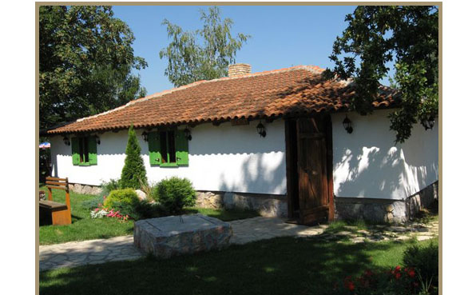
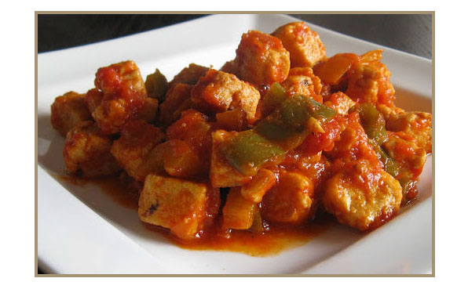
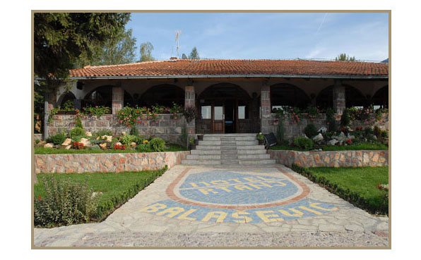

Hajdučka kuća
Restoran Hajdučka kuća je kapaciteta 250 mesta pruža mogućnost organizovanja raznih vrsta poslovnih ručkova, banketa, koktela i organizaciju seminara. U redovnoj ponudi služe se jela nacionalne kuhinje. U okviru Hajdučke kuće nudimo vam udoban smeštaj od 13 soba, kapaciteta 30 ležajeva. Sobe su kompletno opremljene (SAT TV, telefon, kupatilo). U motelu su dozvoljeni kućni ljubimci.

Vajat
Vajat u svom autentičnom prostoru pruža mogućnost pripreme tradicionalnih Srpskih specijaliteta, organizovanje specijalnih večera i ručkova.Raspolaže sa 30 sedećih mesta. U motelu su dozvoljeni kućni ljubimci.Gostima je na raspolaganju istorija na dlanu sa svim svojim originalnim obeležjima.

Restoran Rtanj
Etno Centar “Rtanj Balašević“ predstavlja izuzetan spoj brojnih prirodnih lepota na jednom mestu u službi vašeg zdravlja, odmora i relaksacije.Prijatan enterijer, dobra usluga i odličan izbor jela i pića. Restoran raspolaže sa oko 200 mesta. Preporuka su različite vrste domaćih biljnih čajeva.
Tradicionalna Rtanjska gastronomija podrazumeva speijalitete kao što su Rtanjski pileći stek u vinu (prva slika) i Rtanjska mućkalica sa kačamakom(druga slika).

